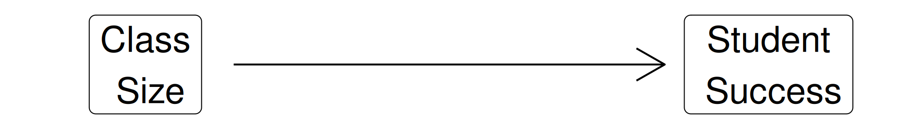
Today’s Agenda
Thinking Carefully About Causal Inference
Causal Diagrams
Directed Acyclic Graphs (DAGs)
Justin Leinaweaver (Spring 2025)
Building a Causal Argument
“Causal inference refers to the process of drawing a conclusion that a specific treatment (i.e. intervention) was the ‘cause’ of the effect (or outcome) that was observed” (Frey 2018).

Building a Causal Argument
Randomized Controlled Trials (RCTs)

Randomized Controlled Trials (RCTs)
Identification and the DGP
Using theory, paint the most accurate picture possible of what the data generating process looks like
Use that data generating process to figure out the reasons our data might look the way it does that don’t answer our research question
Find ways to block out those alternate reasons and so dig out the variation we need
The Data Generating Process (DGP)
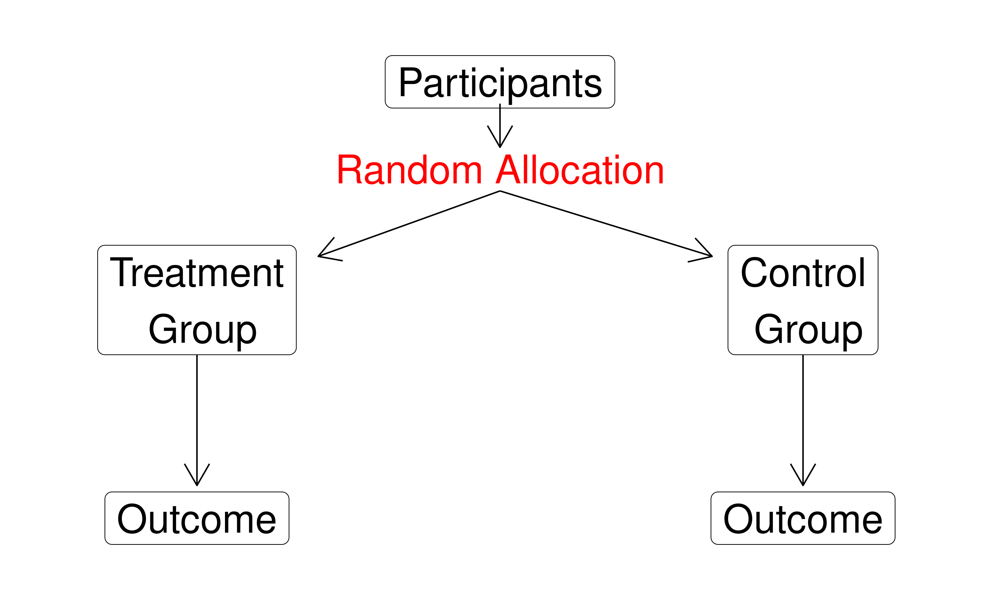
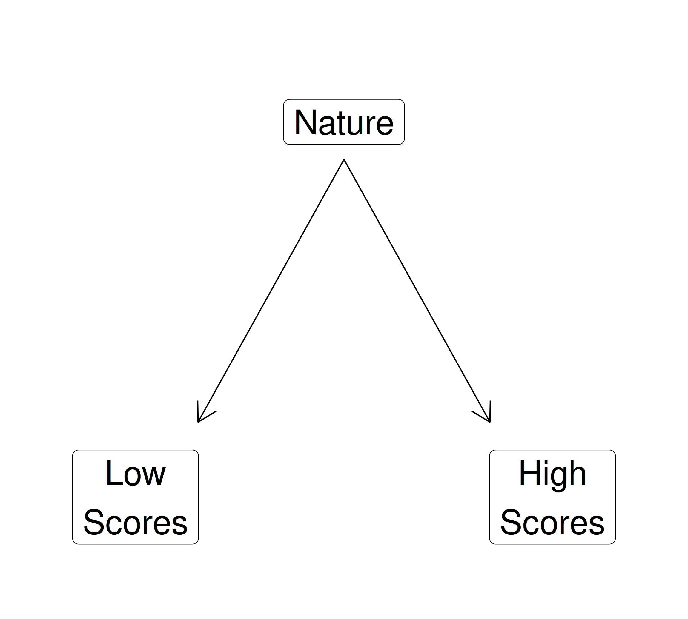
Identification and the DGP
Using theory, paint the most accurate picture possible of what the data generating process looks like
Use that data generating process to figure out the reasons our data might look the way it does that don’t answer our research question
Find ways to block out those alternate reasons and so dig out the variation we need
Identification and the DGP
Using theory, paint the most accurate picture possible of what the data generating process looks like
Refine the DGP to only keep variables that confound the key mechanism
Find ways to block out those alternate reasons and so dig out the variation we need
Directed Acyclic Graphs (DAGs)
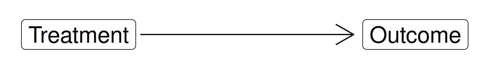
‘Directed’ = Paths indicate direction of effect
‘Acyclic’ = No immediate feedback loops
‘Graphs’ = Visualized
Do ice cream sales create arsonists?

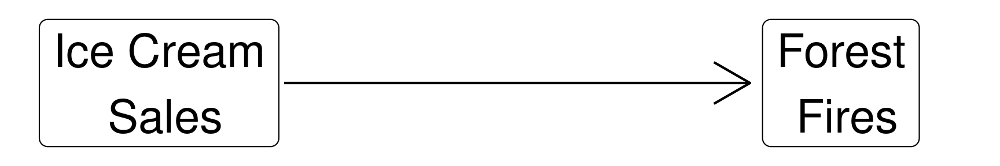
Building a Causal Argument
Confronting Confounding Problems
“…any context in which the association between an outcome Y and a predictor of interest X is not the same as it would be, if we had experimentally determined the values of X” (Pearl 2000).

Identification and the DGP
Using theory, paint the most accurate picture possible of what the data generating process looks like
Refine the DGP to only keep variables that confound the key mechanism
Find ways to block out those alternate reasons and so dig out the variation we need
Is ‘experience’ a confounder in this mechanism?
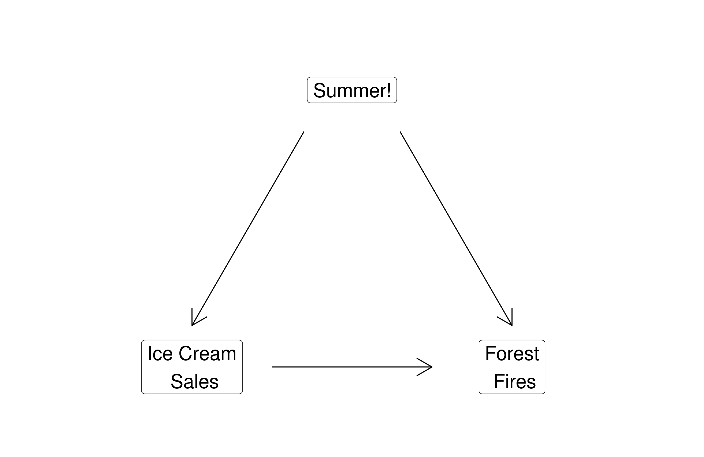
Do Not Control for Mediators
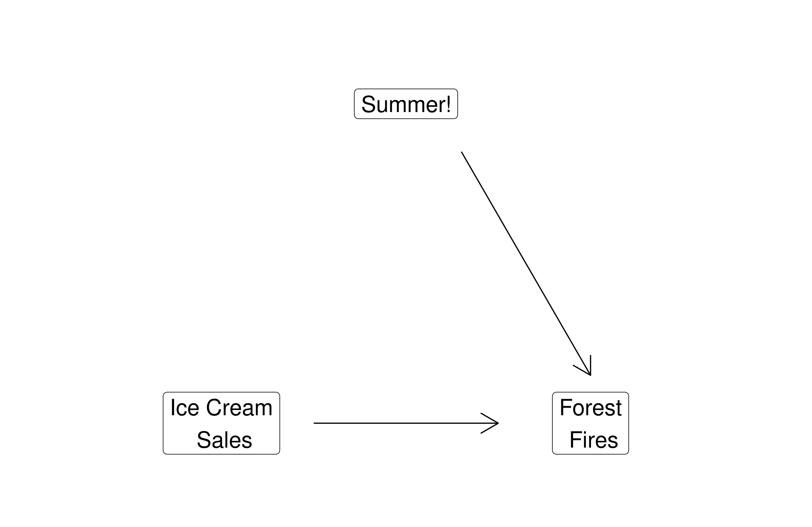
Do Not Control for Colliders
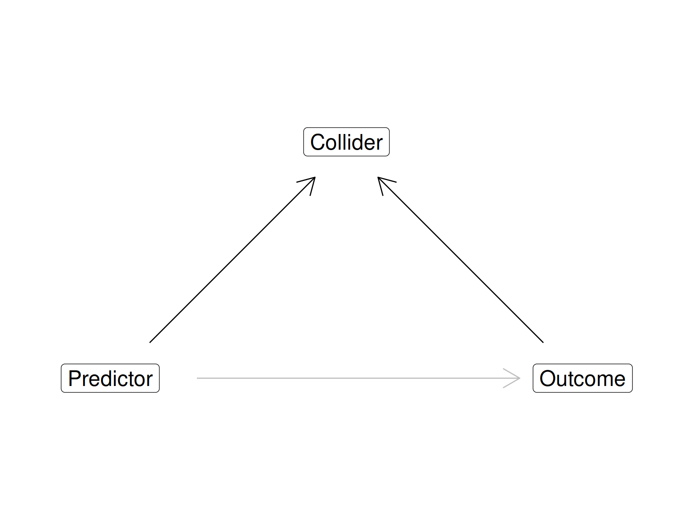
Do Not Control for Colliders
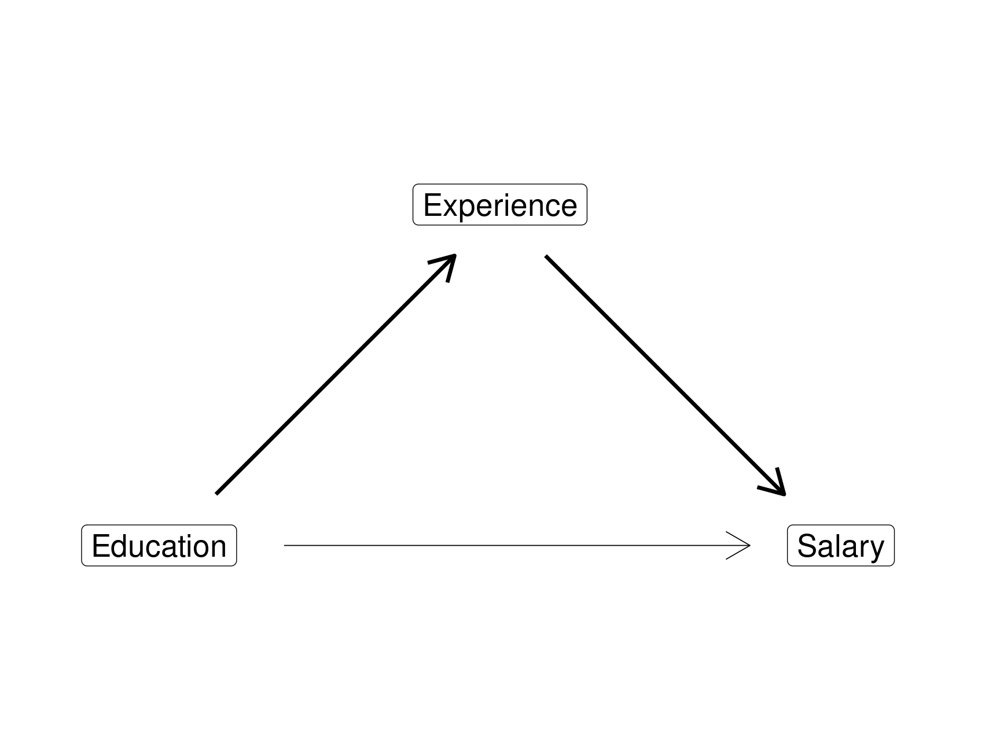
Do Not Control for Colliders
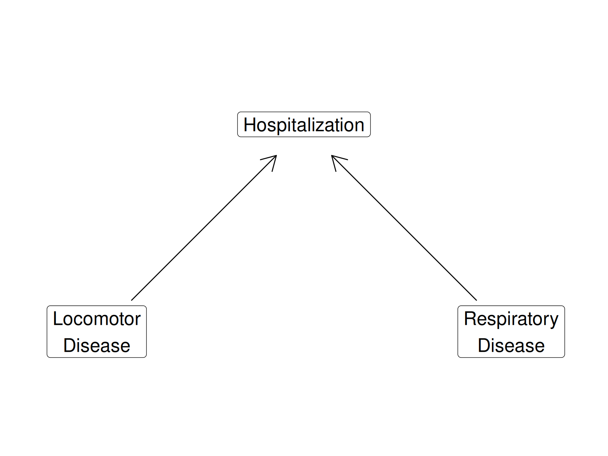
Colliders as Selection Bias

Classify our Options
Make a list: Mediators, Colliders and Confounders
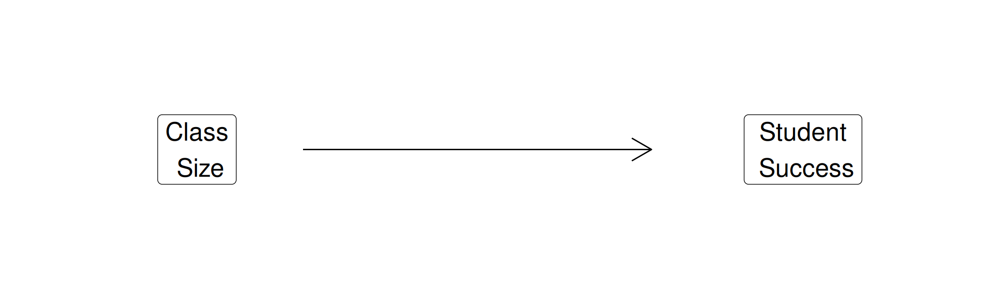
Identification and the DGP
Using theory, paint the most accurate picture possible of what the data generating process looks like
Refine the DGP to only keep variables that confound the key mechanism
Find ways to block out those alternate reasons and so dig out the variation we need
For Today
Brainstorm the DGP for our project (e.g. SUBMIT three separate lists of reasons why states would vary in):
Global Press Freedom (Press_Global)
Environmental Quality (EPI.new)
Your chosen indicator from the EPI
For Next Class
Submit a DAG for our research project
- Press Freedom → Environmental Quality